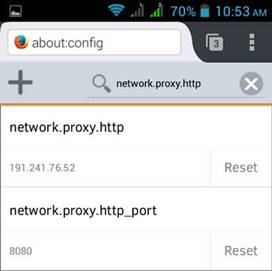
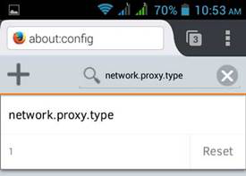

How to configure proxy on Firefox Android app
What I don’t like about Android is that it has no support for http proxy configuration. I use proxy for anonymity which can hide my actual IP address when browsing some sites. I know that there are easy to use VPN apps, but in this article I will teach you the 2 easy ways on how to configure proxy on Firefox Android app.
Basic of Proxy
When you say Proxy, it means substitute. A Proxy server substitute or represents a host(e.g. PC) into the internet instead of you, thus hiding your real identity. It acts as a middleman between you and the internet.
When you type a website in the url of your browser, you talk to the proxy server and not directly on the internet. From you, the data will be sent to the proxy server then the proxy server sends the data for you and vice versa. It means that all the traffic will go through the proxy server and because of that your identity was hidden.
There are pros and cons of using proxies but I will not mention it in this article so I’m warning you to trust only the reliable source of proxy.
How to configure proxy on Firefox Android
Method 1: Manually Configure to Firefox App
1. Open Firefox Android App and type in the url about:config and hit enter.
2. Type in the search box: network.proxy.http
3. This will set the proxy ip and the proxy port
. 
4. For this example, I’m using(I just goggled it) :
o Proxy Ip = 191.241.76.52
o Proxy Port = 8080
5. Change http to type
o Before: network.proxy.http
o After: network.proxy.type
6. Set Proxy Type to 1. This will enable the proxy setting.

7. Then start browsing and viola you’re now browsing with proxy. Here’s my screenshot from whatsmyip.org
You may also like: